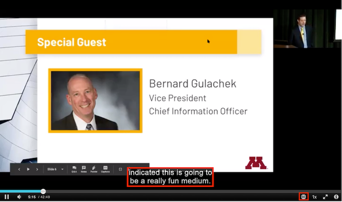

Kaltura: Closed Captioning Process Overview
Kaltura employs an automated captioning process described here.
Captions are the text equivalent of what's being said, as well as other auditory information in a video. Closed captions are text that do not appear under a video by default, but can be turned on by the viewer.
When videos are uploaded to Kaltura in Canvas and MediaSpace, they are automatically closed captioned. This is done through the use of automatic speech recognition (ASR), which scans the audio track for spoken English.
ASR captions are considered drafts as they are up to 90% accurate and do not meet disability accommodation requirements. It is important to proofread auto-generated captions to ensure accessibility.
After you upload a video, the captioning process begins. When your captions are complete you receive a confirmation email.
